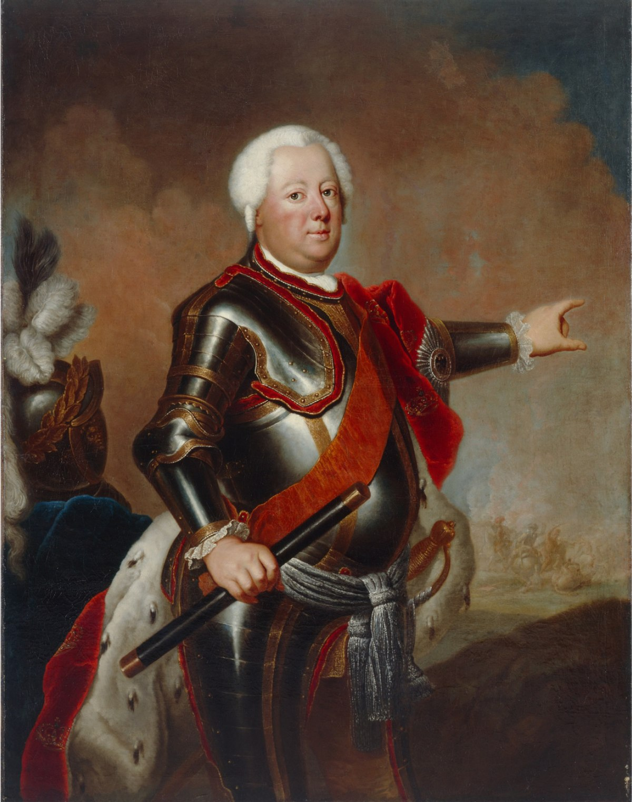

Frederick William was to spend the rest of his life building the Prussian army into Europe’s best fighting instrument. Realizing that Prussia’s military and financial weakness made it dependent on the relations between the great powers, Frederick William resolved to make his state financially independent. In 1713 Prussia’s armed forces numbered 38,000 soldiers, supported in large part by foreign subsidies. When Frederick William died in 1740, he left his son an army of about 83,000 out of a population of 2,200,000, a war chest of more than 8,000,000 taler, and a Prussia that had become the third military power on the European continent, after Russia and France. The canton system of recruitment and replacement, introduced in 1733, provided one-half the manpower of Frederick William’s army from the Prussian peasantry. The rest of the soldiers were recruited from all over Europe. Frederick William also created from his fractious nobility the loyal Prussian officer corps. Prince Leopold I of Anhalt-Dessau, a brutal, if efficient, drillmaster, provided the instrument wielded by these officers—the Prussian infantry, which could outmarch and outshoot all others. The need for funds, coupled with Frederick William’s genuine concern for his subjects, led to a number of sweeping reforms and innovations. A thrifty, practical Protestant, the king on his accession all but dissolved his extravagant court. Prussia’s eastern territories, depopulated by the plague of 1709, were resettled and made prosperous once again. The lot of the peasantry improved. In his own domains, which eventually comprised one-third of all the land, Frederick William freed the serfs completely (1719) and abolished hereditary leases. In 1717 a yearly tax replaced the aristocracy’s feudal war service. Against considerable opposition, he levied additional taxes in Prussia and Lithuania. Prussia’s commercial policies were strictly mercantilist, encouraging industry and manufacture, especially the wool industry, which clothed the king’s army. Convinced that an efficient state could not afford illiterate subjects, Frederick William instituted compulsory primary education in 1717. In 1723 he centralized his administration under a general directory through which his ministers executed his orders. Near the end of his reign, he initiated a program of extensive legal codification. Thus, Frederick William left his heir an efficient, centralized state with sound finances and an excellent army.
